⚠️ Warning!
If you can see this message is because your screen is too small.
Hence, some applets won't be displayed correctly. You can
rotate your device to landscape. Or resize your window so it's
more wide than tall.
We will explore the Poincaré disk
\(\Delta,\) which consists of the unit disk
\[
{\rm D}=\{z\in\mathbb{C}: |z|\lt 1\} \] endowed with
a certain Riemannian metric \(\mu_{\Delta}\)
(see Figure 1).
In this geometric space
\(\Delta,\) as in the hyperbolic
space \(\mathbb{H},\) the negation of
Postulate V of Euclid also holds.
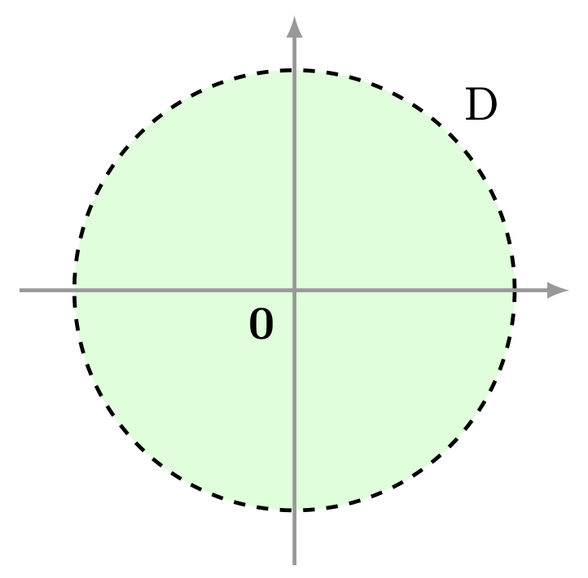
Unit disk.
However, the Poincaré disk \(\Delta\)
is closely connected with the hyperbolic plane
\(\mathbb{H}.\) More precisely, these two
spaces are isometric, that
is, there exists a differentiable function, in this
case a Möbius (Cayley) transformation
\(\psi,\) relating the Riemannian metrics \(\mu_{\Delta}\)
and \(\mu_{h}.\) The function \(\psi\) is the bridge
to express the geodesics, distance function, groups of
isometries of the Poincaré disk \(\Delta\) from
the catalog of properties, discussed previously, of the
hyperbolic plane \(\mathbb{H}.\)
The assignment \(\mu_{\Delta}\) on the
unit disk
\[
{\rm D}=\left\{z\in\mathbb{C}:|z|\lt 1\right\},
\]
which corresponds to each complex number \(z\in {\rm D}\) the
inner product
\begin{equation}
\mu_{\Delta}(z):=\langle \,\, , \, \rangle_{\Delta}^{z}:=\frac{4\langle
\,\, , \, \rangle_{c}}{(1-|z|^{2})^{2}}.
\end{equation}
on the tangent space \(T_{z}{\rm D},\) is a
Riemannian metric, known as the
Riemannian metric of the Poincaré
disk.
To complete the proof we must prove that two
conditions are satisfied:
(1) For each \(z\in U\)
the function \(\mu_{\Delta}\) is an inner product on the
tangent space \(T_{z}{\rm D}.\)
(2) The function \(g_{i,j}\)
is differentiable, for each \(i,j\in\{1,2\}.\)
(1) The function \(\mu_{\Delta}(z)\) is an inner product. Recall
that the tangent space \(T_{z}{\rm D}\) is isomorphic to the \(\mathbb{R}\) vector space \(\mathbb{C}\) and, the
function \(\langle \,\, , \, \rangle^{z}_{c}\) is an inner product on \(T_{z}{\rm D}.\)
From Problem 2 it follows that the function \(\langle \,\,
,\,\rangle_{\Delta}^{z}: T_{z}{\rm
D}\times T_{z}{\rm D}\to\mathbb{R}\) given by
\[
\langle z_{1},z_{2}\rangle_{\Delta}^{z}:=\frac{4\langle z_{1} , z_{2} \rangle_{c}}{(1-|z|^{2})^{2}},
\]
is also an inner product.
(2) Differentiability of the function \(g_{i,j}\). If we consider the
canonical basis \(\{e_1,e_2\}\) for \(\mathbb{C},\) we have that for any \(i,j\in\{1,2\},\) the function
\(g_{i,j}: {\rm D} \to \mathbb{R}\) given by
are continuous on \(U,\) so the Theorem of the sufficient condition for differentiability of a vector function
guarantees that \(g_{i,j}\) is differentiable.
The unit disk \({\rm D}\) provided with the Riemannian metric \(\mu_{\Delta}\) is called the Poincaré disk and is denoted by \(\Delta.\) The tangent plane associated to
each \(z\) on the Poincaré disk will be denoted by \(T_{z}\Delta.\)
Following the ideas described for the construction of the hyperbolic distance \(d_{h}\) from the
hyperbolic Riemannian metric \(\mu_{h},\) we can also obtain a distance function
\begin{equation}\label{ec:funcion_distancia_disco_poincare}
\rho_{\Delta}
\end{equation}
on the Poincaré disk \(\Delta\) from the Riemannian metric \(\mu_{\Delta}.\)
Cayley Transformation
Cayley Transformation
We will say that the spaces \(\mathbb{H}\) and \(\Delta\) are isometric, if
there exists a diffeomorphism \(\psi: \mathbb{H}\to \Delta\) such that
\[
\langle z_{1},z_{2}\rangle_{h}^{z}=\langle D_{z}\psi z_{1}, D\psi_{z} z_{2}\rangle_{\Delta}^{\psi(z)},
\]
for all \(z\in \mathbb{H}\) and any vectors \(z_{1},z_{2}\in T_{z}\mathbb{H}.\) The function \(\psi\)
is called an isometry. This concept extends to Riemannian
manifolds. We will construct an isometry known as the Cayley
transformation.
The Cayley transformation (isometry) \(\psi,\) plays an important role on the Poincaré disk
\(\Delta,\) because it has the following properties:
(1) The function \(\psi\) sends geodesics of the hyperbolic plane \(\mathbb{H}\) to
geodesics of the Poincaré disk \(\Delta.\)
(2) The Cayley function \(\psi\) and its inverse \(\psi^{-1}\) are isometries
(they preserve
distances), so we have the equality
\[
\rho_{\Delta}(z,w)=\rho(\psi^{-1}(z),\psi^{-1}(w)),
\]
for all \(z,w\in\Delta.\) From this relation it is easy to construct a formula to calculate the
distance between two complex numbers \(z\) and \(w\) that lie on the Poincaré disk \(\Delta.\)
(3) The isometry group \({\rm Isom}(\Delta)\) of the Poincaré disk is
\[
\psi {\rm Isom}(\mathbb{H})\psi^{-1}.
\]
Let us construct the Cayley transformation!
Specifically, we will find a Möbius transformation
\(\psi\in{\rm PSL}(2,\mathbb{C}),\) which sends the upper half-plane
\[
U=\{z\in\mathbb{C}: {\rm Im}(z)>0\},
\]
onto the unit disk
\[
{\rm D}=\{z\in\mathbb{C} : |z|\lt 1\}, \] such that
the complex numbers \(-1,\textbf{0},1\) are mapped to the points
\(i,-1,-i,\) respectively.
The transformation \(\psi\) is given by
\[
\psi(z)=\dfrac{az+b}{cz+d}.
\]
Let us find the coefficients \(a,b,c,d\in\mathbb{C}\)!
(1) Since \(\psi(\textbf{0})=-1\), then
\begin{align*}
\psi(\textbf{0})=\dfrac{b}{d}=-1.
\end{align*}
Equivalently,
\begin{equation}
b=-d.
\end{equation}
We substitute into the assignment rule and obtain
\[
\psi(z)=\dfrac{az-d}{cz+d}.
\]
(2) We evaluate \(\phi\)
at the complex numbers \(\pm 1\) and obtain
\[
\begin{array}{ccc}
\psi(-1)=i & \text{ and } & \psi(1)=-i,\\
&&\\
\dfrac{-a-d}{-c+d}=i & \text{ and } & \dfrac{a-d}{c+d}=-i,\\
&&\\
-a-d=i(-c+d)& \text{ and } & a-d=-i(c+d)\\
\end{array}
\]
We add and subtract the previous equalities, thus we obtain
\[
\begin{array}{ccc}
{\color{red}\cancel{-a}}-d+{\color{red}\cancel{a}}-d=-ic+{\color{blue}\cancel{id}}-ic{\color{blue}\cancel{-id}}
& \text{ and } &
-a{\color{red}\cancel{-d}}-a+{\color{red}\cancel{d}}={\color{blue}\cancel{-ic}}+id+{\color{blue}\cancel{ic}}+id,\\
&&\\
-2d=-2ic & \text{ and } & -2a=2id,\\
&&\\
d=ic & \text{ and } & -a=id.\\
\end{array}
\]
We substitute these last two equalities into the assignment rule of \(\psi\) so that its
coefficients are in terms of \(d.\) Then, we compute and obtain
(4) The Cayley transformation \(\psi\) sends generalized circles to
generalized circles, then the real axis \({\rm Re}\) is sent via \(\psi\) to the
boundary \(\partial \Delta=\{z\in\mathbb{C}: |z|=1\}\) of the unit disk \(\Delta.\) The image of
infinity \(\infty\) under \(\psi\) is
\[
\psi(\infty)=1.
\]
(5) The Cayley transformation \(\psi\) sends the complex number \(i\) to
\[
\psi(i)=\textbf{0},
\]
since \(\psi\) is a continuous mapping and continuous functions send connected sets to connected sets, then
\(\psi\) must send the upper half-plane \(U\) to the unit disk \(\Delta\) (see Figure
2).
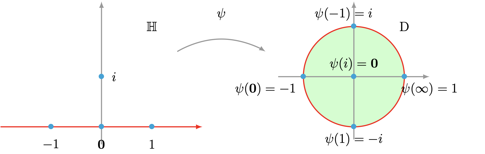
Cayley transformation geometry.
The Cayley function \(\psi\) is an isometry.
We must prove the equality
\[
\langle z_{1},z_{2}\rangle_{h}^{z}=\langle D_{z}\psi z_{1}, D\psi_{z} z_{2}\rangle_{\Delta}^{\psi(z)},
\]
for all \(z\in \mathbb{H}\) and any vectors \(z_{1},z_{2}\in T_{z}\mathbb{H}.\)
From the Cauchy-Riemann conditions theorem, we have that the matrix product \(D_{z}\psi z_{i}\) is
equal to the complex derivative \(\psi'(z)\) times \(z_{i},\) that is,
\[
D_{z}\psi z_{i}= \psi'(z)z_{i}
\]
for \(i\in\{1,2\}.\)
Thus, from the basic rules of complex differentiation we obtain that
Then we substitute the value of the complex derivative into \(\langle D_{z}\psi z_{1}, D\psi_{z}
z_{2}\rangle_{\Delta}^{\psi(z)}\) and perform the respective operations to obtain
As a consequence, the Cayley transformation \(\psi\) sends the geodesic \([z,w]\) of the hyperbolic plane
\(\mathbb{H}\) to the geodesic \([\psi(z),\psi(w)]\) of the Poincaré disk \(\Delta\) and, its respective
inverse \(\psi^{-1}\) sends the geodesic \([u,v]\) of the Poincaré disk \(\Delta\) to the geodesic
\([\psi^{-1}(u),\psi^{-1}(v)]\) of the hyperbolic plane \(\mathbb{H}.\)
We know that the geodesics of the hyperbolic plane \(\mathbb{H}\) correspond to segments of
hyperbolic lines. Recall that hyperbolic lines come from generalized circles orthogonal
to the real axis (see
Definition 7, Chapter 3).
To what geometric objects do the direct image under the Cayley transformation \(\psi\) of
these hyperbolic lines correspond?
Recall that the Cayley transformation \(\psi\) has the following properties:
(1) It is a holomorphic function, therefore it preserves angles.
(2) The transformation \(\psi\) is a Möbius transformation, therefore it acts on the set of
generalized circles. See Figure 3.
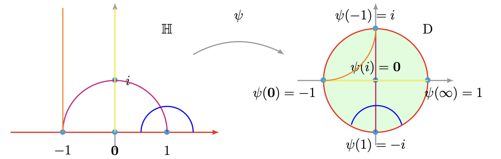
Lines of the Poincaré disk.
From the previous two characteristics that the transformation \(\psi\) possesses, we conclude that the direct
image under the Cayley transformation \(\psi\) of a hyperbolic line is a piece of a generalized circle
such that said circle is orthogonal to the boundary \(\partial \Delta\) of the Poincaré
disk \(\Delta.\) See Figure 4.
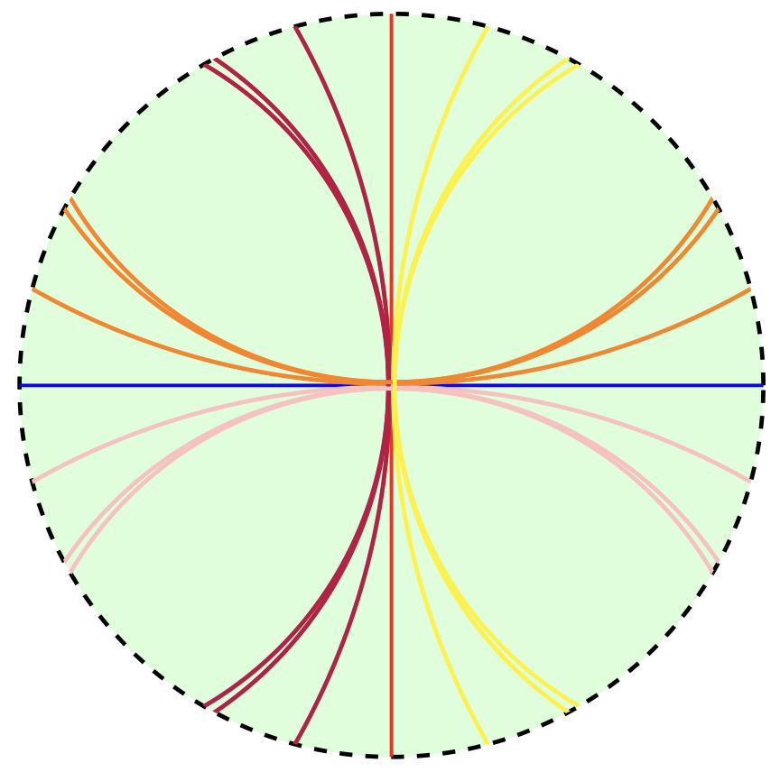
Hyperbolic lines of the Poincaré disk.
The geodesics of the Poincaré disk \(\Delta\) correspond to (pieces) segments of lines of the Poincaré
disk, in other words, the geodesics are segments of generalized circles in \(\Delta\)
orthogonal to the boundary \(\partial \Delta\) of the Poincaré disk \(\Delta.\)
Distance
Distance
The Cayley function \(\psi\) and its inverse \(\psi^{-1}\) are functions that preserve distances on
the Poincaré disk and the hyperbolic plane, respectively. That is,
(1) For any complex numbers \(z,w\in\mathbb{H},\) we have
\[\rho(z,w)=\rho_{\Delta}(\psi(z),\psi(w)).\]
(2) For any complex numbers \(z,w\in\Delta,\) we have
\[\rho_{\Delta}(z,w)=\rho(\psi^{-1}(z),\psi^{-1}(w)).\]
The equality described in item (2)
together with the expression described in
Theorem 12 (Chapter
3),
allow us to find a formula for the distance
between two complex numbers \(z\) and \(w\) on the Poincaré disk.
The distance \(\rho_{\Delta}\) between the complex numbers \(z,w\in \Delta\) is given by
Since the inverse function \(\psi^{-1}\) is a transformation that preserves distance, then
\begin{equation}
\rho_{\Delta}(z,w)=\rho(\psi^{-1}(z),\psi^{-1}(w)).
\end{equation}
From Theorem 12
(Chapter 3),
we rewrite the previous equality as
We will compute the norms of the differences that appear in the previous natural logarithm and then
substitute them to obtain the formula described in the theorem.
For the norm \(\left|\psi^{-1}(z)-\overline{\psi^{-1}(w)}\right|\),
we have:
Now, we substitute the norms described in equations
\eqref{ec:norma_1_diferencias_en_el_logaritmo_natural} and
\eqref{ec:norma_2_diferencias_en_el_logaritmo_natural},
into the logarithm (see equation \eqref{ec:distancia_disco_Poincare_prueba_the})
and compute to obtain
Curiosity! The distance on the Poincaré disk from any complex number
\(z\in\Delta\) to zero \(\textbf{0}\) is
\[
\rho_{\Delta}(0,z)=\ln\left(\displaystyle\frac{1+|z|}{1-|z|}\right).
\]
Using the relations described in Lemma 11 (Chapter 3), the
reader can easily verify the
following relations on the Poincaré disk.
For any two elements \(z,w\) on the Poincaré disk \(\Delta\) the following
equalities are satisfied:
The following reasoning allows us to understand the complete group of isometries of the Poincaré disk
\(\Delta.\) If \(T:\mathbb{H}\to\mathbb{H}\) is an isometry, then the composition
\[
\psi\circ T\circ \psi^{-1}: \Delta\to \Delta,
\]
is an isometry of the Poincaré disk \(\Delta.\) In other words, there exists an element
\(\widetilde{T}\in{\rm Isom}(\Delta)\) such that the following diagram commutes
that is, \(\psi^{-1}\circ \widetilde{T}=T\circ \psi^{-1}.\) Conversely, if \(g:\Delta\to\Delta\) is
an isometry, then the composition
\[
\psi^{-1}\circ g\circ \psi: \mathbb{H}\to \mathbb{H},
\]
is an isometry of the hyperbolic plane. In other words, there exists an element \(\widetilde{g}\in{\rm
Isom}(\mathbb{H})\) such that the following diagram commutes
that is, \(\psi\circ \widetilde{g}=g\circ \psi.\) Consequently, we conclude that the group of isometries
of the Poincaré disk is conjugate to the group of isometries of the hyperbolic plane. More precisely,
\[
{\rm Isom}(\Delta)=\psi {\rm Isom}(\mathbb{H})\psi^{-1}.
\]
Let us give a precise description of the elements of \({\rm Isom}(\Delta).\) We have two possible
ways to write the isometry \(\widetilde{T}=\psi \circ T \circ \psi^{-1}\) described in
\eqref{ec:elementos_grupos_isom_disco_Poincare}, being
\[
T(z)=\dfrac{az+b}{cz+d} \quad \text{ or } \quad T(z)=\dfrac{a(-\overline{z})+b}{c(-\overline{z})+d},
\]
such that \(a,b,c,d\in\mathbb{R}\) and \(ad-bc=1.\)
For the case \(T\in {\rm PSL}(2,\mathbb{R}),\) the composition \(\widetilde{T}=\psi\circ T \circ
\psi^{-1}\) is given by the following product of matrix classes
Since \(\widetilde{T}\) is an element of \({\rm PSL}(2,\mathbb{C}),\) then its determinant
\[
{\rm det}(\widetilde{T})=u\overline{u}-v\overline{v}=|u|^{2}-|v|^{2}=1.
\]
Then the Möbius transformation \(\widetilde{T}\in{\rm PSL}(2,\mathbb{C})\) is given by
\[
\widetilde{T}(z)=\dfrac{uz+v}{\overline{v}z+\overline{u}},
\]
such that the complex numbers \(u,v\in\mathbb{C}\) satisfy \(|u|^{2}-|v|^{2}=1.\) The previous computations
imply the following result.
The isometries of the Poincaré disk \(\Delta\) in \({\rm PSL}(2,\mathbb{C})\) are of the form
\[
\widetilde{T}(z)=\dfrac{uz+v}{\overline{v}z+\overline{u}},
\]
for some complex numbers \(u,v\in\mathbb{C}\) that satisfy \(|u|^{2}-|v|^{2}=1.\)
Let us denote by \({\rm Isom}_{+}(\Delta)\) the set of all isometries of the Poincaré disk
that are Möbius transformations in \({\rm PSL}(2,\mathbb{C}).\)
Let us rewrite the assignment rule of the elements in \({\rm Isom}_{+}(\Delta).\) Take the
Möbius transformation \(\widetilde{T}\) such that
\[
\widetilde{T}(z)=\dfrac{uz+v}{\overline{v}z+\overline{u}},
\]
such that the complex numbers \(u,v\in\mathbb{C}\) satisfy \(|u|^{2}-|v|^{2}=1.\)
Computing appropriately, we obtain
\begin{align*}
\widetilde{T}(z)&=\dfrac{uz+v}{\overline{v}z+\overline{u}}=\dfrac{u\left(z+\dfrac{v}{u}\right)}{\overline{v}z+\overline{u}}=\dfrac{\dfrac{u}{|u|}\left(z+\dfrac{v}{u}\right)}{\dfrac{\overline{v}}{|u|}z+\dfrac{\overline{u}}{|u|}},\\
\\
&=\dfrac{\dfrac{u}{|u|}\dfrac{u}{|u|}\left(z+\dfrac{v}{u}\right)}{\dfrac{\overline{v}}{|u|}\dfrac{u}{|u|}z+\dfrac{\overline{u}}{|u|}\dfrac{u}{|u|}}=\dfrac{\left(\dfrac{u}{|u|}\right)^{2}\left(z-\left[-\dfrac{v}{u}\right]\right)}{\dfrac{\overline{v}u}{|u|^{2}}z+\dfrac{\overline{u}u}{|u|^{2}}},\\
\\
&=\dfrac{\left(\dfrac{u}{|u|}\right)^{2}\left(z-\left[-\dfrac{v}{u}\right]\right)}{\dfrac{\overline{v}{\color{red}\cancel{u}}}{\overline{u}{\color{red}\cancel{u}}}z+{\color{blue}\cancelto{1}{\dfrac{|u|^{2}}{|u|^{2}}}}}=\dfrac{\left(\dfrac{u}{|u|}\right)^{2}\left(z-\left[-\dfrac{v}{u}\right]\right)}{\overline{\left[\dfrac{v}{u}\right]}z+1}.\\
\end{align*}
Now, for certain terms of the Möbius transformation \(\widetilde{T}\) we use the following notation:
\begin{equation}\label{ec:termino_z_en_isometrias_disco}
z_{0}=-\dfrac{v}{u},
\end{equation}
then
\begin{equation}\label{ec:termino_z_conjugado_en_isometrias_disco}
\overline{z_{0}}=-\overline{\left[ \dfrac{v}{u}\right]}.
\end{equation}
The complex number \(\left(\dfrac{u}{|u|}\right)^{2}\) lies on the unit circle
\(S^{1}=\{z\in\mathbb{C}: |z|=1\},\) then we can rewrite it in the form
\begin{equation}\label{ec:termino_circunferencia_en_isometrias_disco}
\left(\dfrac{u}{|u|}\right)^{2}=e^{i\theta},
\end{equation}
for some \(\theta\in [0,2\pi).\) Finally, we substitute the terms described in equations
\eqref{ec:termino_z_en_isometrias_disco}, \eqref{ec:termino_z_conjugado_en_isometrias_disco} and
\eqref{ec:termino_circunferencia_en_isometrias_disco} into the assignment rule of the Möbius
transformation and, we obtain
\begin{equation}\label{ec:isom_plus_del_disco_de_Poincare}
\widetilde{T}(z)=e^{i\theta}\dfrac{z-z_{0}}{1-\overline{z_{0}}z},
\end{equation}
for some \(z_{0}\in\Delta\) and some \(\theta\in[0,2\pi).\) The fact that \(z_{0}\in\Delta,\) is deduced from
the equality
\(|u|^{2}-|v|^{2}=1.\) Because this last relation implies
\begin{align*}
|u|^{2}&=1+ |v|^{2},\\
|u|^{2}&\lt |v|^{2},\\ \left|\dfrac{u}{v}\right|^{2}&\lt 1,\\ \left|\dfrac{u}{v}\right|&\lt 1,\\ |z_{0}|&\lt
1.
\end{align*} We will prove that indeed, the elements that make up \({\rm Isom}_{+}(\Delta)\) have
the form of equation \eqref{ec:isom_plus_del_disco_de_Poincare}.
Every Möbius transformation of the form
\[
T(z)=e^{i\theta}\dfrac{z-z_{0}}{1-\overline{z_{0}}z},
\]
with \(\theta\in[0,2\pi)\) and \(z_{0}\in \Delta,\)
is in \({\rm Isom}_{+}(\Delta).\)
We must prove that the Möbius transformation \(T,\) given by
\[
T(z)=e^{i\theta}\dfrac{z-z_{0}}{1-\overline{z_{0}}z},
\]
with \(\theta\in[0,2\pi)\) and \(z_{0}\in \Delta,\) leaves
the Poincaré Disk invariant. That is,
\(T(\Delta)=\Delta.\) Note that
\(T(\textbf{0})=\textbf{0},\) then we only need to prove that
\[
|T(z)|=1, \text{ for all } z\in\partial \Delta.
\]
Then,
Now, the composition
\[
R_{\rm Im }=\psi\circ R_{\rm Im }\circ \psi^{-1},
\]
is also an element of the group of isometries of the
Poincaré disk \(\Delta.\) From
Theorem 13 (Chapter 3)
together with the previous result, it follows that the group of
isometries of the Poincaré disk is generated by \(R_{\rm Im}\) together with the elements of \({\rm
Isom}_{+}(\Delta).\) In other words.
Any isometry of the Poincaré disk is an element of \({\rm Isom}_{+}(\Delta)\) or is of the
form
\[
T(z)=e^{i\theta}\dfrac{\overline{z}-z_{0}}{1-\overline{z_{0}}\overline{z}},
\]
with \(\theta\in[0,2\pi)\) and \(z_{0}\in \Delta.\)
Hyperbolic Area
Hyperbolic Area
In the complex plane \(\mathbb{C}\) the value of the area of the parallelogram \(P\) formed by the canonical
basis \(e_{1}\) and \(e_{2}\) is
\[
A(P)=\vert e_{1} \vert \, \vert e_{2} \vert \, {\rm sen} \left(\frac{\pi}{2}\right)=\vert e_{1} \vert \, \vert
e_{2} \vert,
\]
where \(\dfrac{\pi}{2}\) is the value of the angle formed by the vectors of the canonical basis. Given the complex
number \(z\in\mathbb{C},\) on the tangent plane \(T_{z}\mathbb{C}\) (isomorphic to \(\mathbb{C}\)) this area is
denoted by
\[
A(P)=dA= dx \, dy=dy\, dx.
\]
Using the definition of the integral and the area of the parallelogram \(P,\) we can define the (Euclidean)
area of the region \(K\subset \mathbb{C}\) as the value
\[
A(K)=\iint\limits_{K}dA,
\]
if it exists. We will extend these ideas to define the hyperbolic area of a region \(K\subset\mathbb{H}.\)
Given the point \(z=x+iy\in\mathbb{H},\) then on the tangent space \(T_{z}\mathbb{H}\) the hyperbolic area of the parallelogram \(P\) formed by the canonical basis \(e_{1}\) and
\(e_{2}\) is
\begin{equation}
A_h(P):=\Vert e_1 \Vert_{h} \, \Vert e_{2} \Vert_{h} \, {\rm sen} \left(\frac{\pi}{2}\right)=\frac{\vert e_{1}
\vert \, \vert e_{2} \vert }{\left({\rm Im}(z)\right)^{2}}=\frac{\vert e_1 \vert \, \vert e_{2}
\vert}{y^2}=\dfrac{dA}{y^{2}},
\end{equation}
where \(\dfrac{\pi}{2}\) is the value of the angle formed by the vectors \(e_{1}\) and \(e_{2}.\)
Thus, we define the hyperbolic area of the region \(K\subset \mathbb{H}\) as the
value
\[
A_{h}(K)=\iint\limits_{K}\frac{dA}{\left({\rm Im}(z)\right)^{2}},
\]
if it exists, with \(z\in K.\)
Take the square \(K=[0,1]\times [1,2]\) in the hyperbolic plane \(\mathbb{H}.\) From Fubini's Theorem it
follows that the hyperbolic area of \(K\) is
The elements of \({\rm PSL}(2,\mathbb{R})\) leave invariant the hyperbolic area of any parallelogram
\(P\) of the tangent plane \(T_{z}\mathbb{H}.\) More precisely.
Given the complex number \(z\in\mathbb{H}\) and the parallelogram \(P\) on \(T_{z}\mathbb{H}\) formed by the
vectors \(v,w\in T_{z}\mathbb{H}.\) Then for any \(T\in {\rm PSL}(2,\mathbb{R}),\) the hyperbolic
area of \(P\) coincides with the hyperbolic area of the parallelogram \(P'\) on \(T_{T(z)}\mathbb{H},\)
which is formed by the vectors \(T'(z)\cdot v\) and \(T'(z)\cdot w\) (see Figure 5).
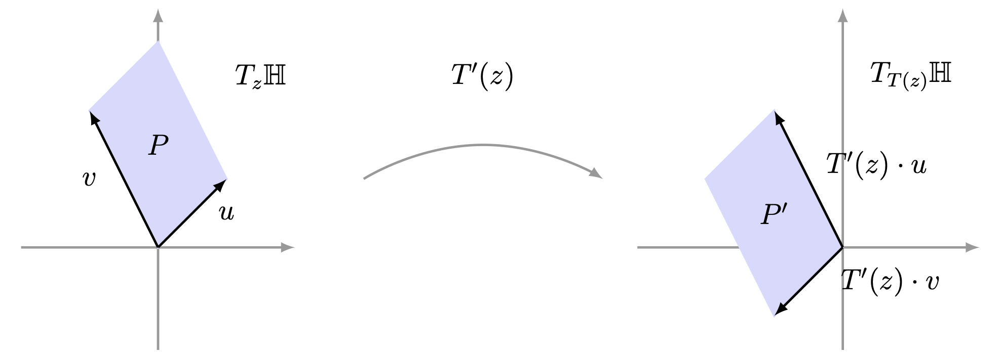
Invariant hyperbolic area.
Given the Möbius transformation \(T\in{\rm PSL}(2,\mathbb{R})\) such that
\[
T(z)=\frac{az+b}{cz+d},
\]
we have that the hyperbolic area of the parallelogram \(P'\subset T_{T(z)}\mathbb{H}\) is
\begin{align*}
A_{h}(P')&=\Vert T'(z)\cdot v \Vert_{h} \, \Vert T'(z)\cdot w \Vert_{h}=\dfrac{\vert T'(z)\cdot v \vert \,
\vert T'(z)\cdot w \vert}{\left( {\rm Im}(T(z))\right)^{2}},\\
&\\
&=\dfrac{\vert T'(z)\vert \, \vert v \vert \, \vert T'(z) \vert \, \vert w \vert}{\left( {\rm
Im}(T(z))\right)^{2}}= \dfrac{\vert T'(z)\vert \, \vert T'(z) \vert \, \vert v \vert \, \vert w
\vert}{\left(
{\rm Im}(T(z))\right)^{2}}.
\end{align*}
Since the imaginary part of \(T\) and its respective complex derivative are given by
$$
\operatorname{Im}(T(z))=\dfrac{\operatorname{Im}(z)}{|cz+d|^2}\quad \text{ and }\quad
T'(z)=\dfrac{1}{(cz+d)^{2}},
$$
then the hyperbolic area of the parallelogram \(P'\) is
Let us verify that the hyperbolic area of any region in \(\mathbb{H}\) is invariant under elements
of \({\rm PSL}(2,\mathbb{R}).\) First, recall the Change of Variable
Theorem for double integrals.
[Change of Variable Theorem] Consider the regions \(D\) and \(D^{\ast}\) in \(\mathbb{R}^2\) and a
bijective mapping \(T:D^{\ast}\to D\) of class \(C^{1},\) defined by
\[
T(u,v)=(x(u,v),y(u,v)).
\]
Then for any integrable function \(f:D\to \mathbb{R}\) we have
where \(\left|\dfrac{\partial(x,y)}{\partial(u,v)}\right|\) is the determinant of the Jacobian matrix associated
to the transformation \(T.\)
The hyperbolic area is invariant under elements of \({\rm PSL}(2,\mathbb{R}).\) In other words, if the
hyperbolic area of the region \(K\subset \mathbb{H}\) exists, then \(A(K)=A(T(K)),\) for each \(T\in {\rm
PSL}(2,\mathbb{R}).\)
Take the Möbius transformation \(T\in {\rm PSL}(2,\mathbb{R})\) given by
\[
T(z)=\dfrac{az+b}{cz+d},
\]
and the region \(K\) in the hyperbolic plane \(\mathbb{H}.\) Let us see that the equality
\[
A_h(K)=A_h(T(K)).
\]
Given the complex number \(z=u+vi \in K,\) then
the assignment rule of the Möbius transformation \(T\) can be
rewritten as
\[
T(u,v)=(x(u,v),y(u,v)),
\]
for some functions \(x,y:K\to\mathbb{R}.\) Since the function \(T\) satisfies the
Cauchy-Riemann conditions, because it is holomorphic, then the determinant of the Jacobian matrix associated to \(T\) at the
point \(z=(u,v)\) is given by
The Gauss-Bonnet Theorem is an interesting result about surfaces, which relates a geometric quality
(curvature) with a topological quality (the Euler-Poincaré characteristic). However,
from the point of view of hyperbolic geometry, the Gauss-Bonnet theorem is stated for
hyperbolic triangles and relates their area to the sum of the measures of their respective angles.
We will begin by defining the notion of angle between orthogonal
circles.
Take the parametrizations \(\gamma_{1},\gamma_{2}:[a,b]\to \mathbb{H}\) of two hyperbolic lines that
intersect at the point \(z\in\mathbb{H},\) that is, there exists a real value \(t\in[a,b]\) such that
\(\gamma_{1}(t)=\gamma_{2}(t)=z.\) The tangent vectors \(\gamma_{1}'(t)\) and \(\gamma_{2}'(t)\) in the
tangent space \(T_z\mathbb{H}\) define an angle (see Figure 6), which
we will call the
angle of the hyperbolic lines \(\gamma_{1}\) and \(\gamma_{2}\) at the point
\(z\).
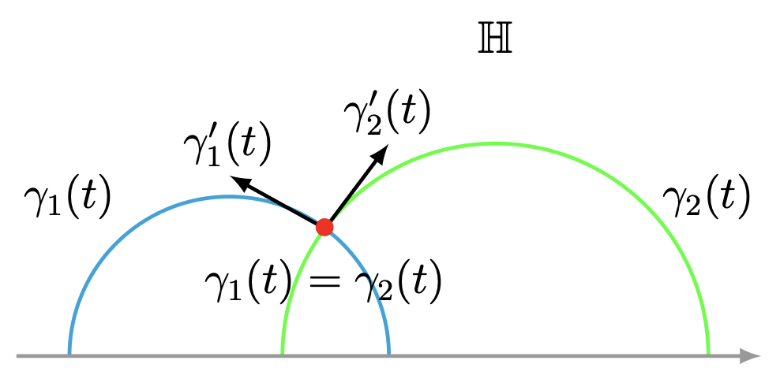
Angle between two hyperbolic lines.
The measure of the angle formed by the
vectors \(\gamma'_{1}(t)\) and \(\gamma'_{2}(t)\) is the value
\(\pi-\theta\) where \(\theta\in [0,\pi]\) such that
When removing from the hyperbolic plane \(\mathbb{H}\) a hyperbolic line \(C,\) two disjoint
connected subsets \(H_{1}\) and \(H_{2}\) result (see Figure 7), which
are called half-spaces of the hyperbolic plane \(\mathbb{H}\).
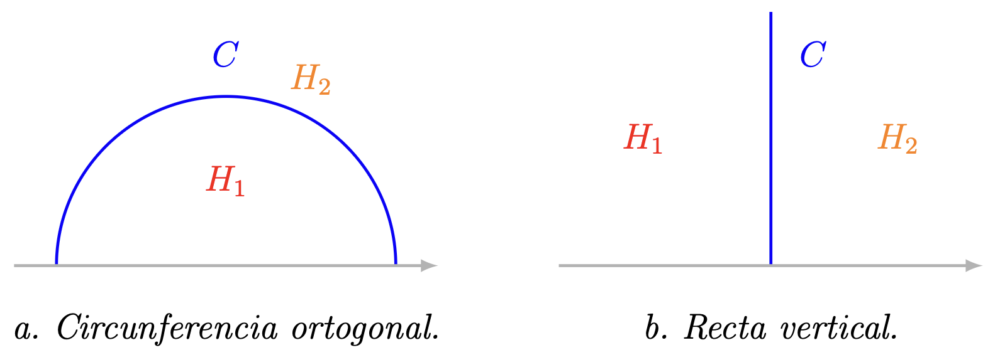
Half-spaces of the hyperbolic plane.
We will say that three distinct points \(z_1,\) \(z_2\) and \(z_3\) of the hyperbolic plane are collinear, if there exists a hyperbolic line that crosses them.
We will denote by
\[
\hat{\mathbb{R}}=\mathbb{R}\cup \{\infty\},
\]
the extended reals, that is, the real line \(\mathbb{R}\)
together with the point \(\infty.\)
Take three distinct points \(z_{1},\) \(z_{2}\) and \(z_{3}\) in the hyperbolic plane together with the
extended real line \(\mathbb{H}\cup \hat{\mathbb{R}}.\) We denote by \(H_{i}\) the half-space defined by the
hyperbolic line that passes through the points \(z_{j}\) and \(z_{k}\) that contains the point \(z_{i},\) with \(i\neq
j\neq k\in\{1,2,3\}.\) The hyperbolic triangle with vertices \(z_{1},z_{2}\) and
\(z_{3}\)
\[
\Delta(z_{1},z_{2},z_{3}),
\]
is the set \( H_{1} \cap H_{2} \cap H_{3}.\) The sides of the
hyperbolic triangle \(\triangle(z_{1},z_{2},z_{3})\) are the geodesics \([z_1,z_2],\) \([z_2,z_3]\) and
\([z_3,z_1].\) The angles \(\alpha,\) \(\beta\) and \(\zeta\) of the
hyperbolic triangle \(\Delta(z_{1},z_{2},z_{3})\) are those that define the sides of the triangle at the
vertices (complex numbers) \(z_1,\) \(z_2\) and \(z_3,\) respectively.
Hyperbolic triangles may have three, two, one or no vertices on the extended reals
\(\hat{\mathbb{R}}\) (see Figure 8).
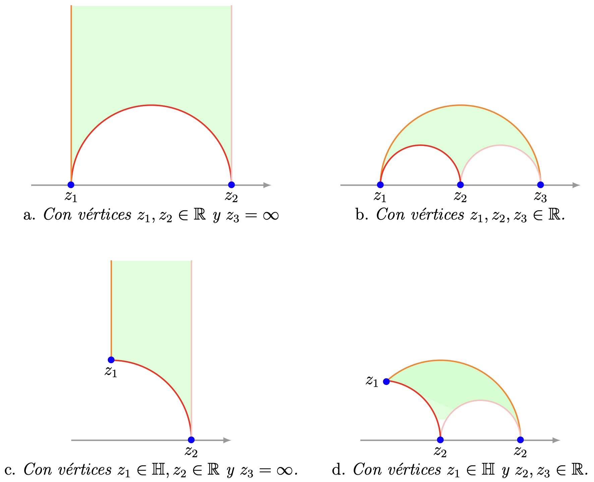
Hyperbolic triangles.
[Gauss-Bonnet] Given the hyperbolic triangle \(\triangle(z_{1},z_{2},z_{3})\) whose angles measure \(\alpha,\)
\(\beta\) and \(\zeta,\) then the hyperbolic area of said hyperbolic triangle is given by the formula
\[
A(\triangle(z_{1},z_{2},z_{3}))=\pi- (\alpha+\beta+\zeta).
\]
For the hyperbolic triangle \(\Delta(z_{1},z_{2},z_{3})\) we must study the following cases.
Case (1) One of its vertices is on the extended reals
\(\hat{\mathbb{R}}.\) Then the measure of one of the angles of the hyperbolic triangle
\(\Delta(z_{1},z_{2},z_{3})\) is \(0\)
(see Problem 28). Assume without
loss that said angle is \(\zeta.\) By means of a Möbius transformation \(T\in {\rm PSL}(2,\mathbb{R})\)
we send:
(1) The vertices of the hyperbolic triangle \(\triangle(z_{1},z_{2},z_{3})\) that are
in \(\mathbb{H}\) onto the unit circle.
(2) If necessary we use the Möbius transformation \(T(z)=\frac{-1}{z}\) such that
\(T\) sends the third vertex of the hyperbolic triangle \(\triangle(z_{1},z_{2},z_{3})\) to \(\infty\)
(see Figure 9).
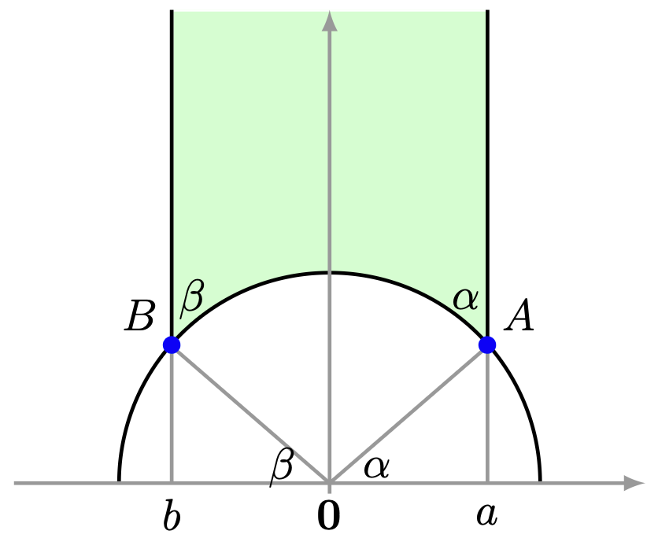
Hyperbolic triangle with vertex $\infty.$
Recall that the Möbius transformation \(T\in {\rm PSL}(2,\mathbb{R})\) leaves invariant the hyperbolic
area of the hyperbolic triangle \(\triangle(z_{1},z_{2},z_{3})\)
(see Theorem 11),
that is,
\[
A_{h}(\triangle(z_{1},z_{2},z_{3}))=A_{h}(T(\triangle(z_{1},z_{2},z_{3}))).
\]
Using the integral, we have that the hyperbolic area of the hyperbolic triangle
\(T(\triangle(z_{1},z_{2},z_{3}))\) is
Note that the angles \(\angle A\textbf{0}a\) and \(\angle B\textbf{0}b\) are congruent to the angles
\(\alpha\) and \(\beta.\) Then we perform the trigonometric substitution in the previous equality given by
\[
\cos \theta=\frac{1}{\sqrt{1-x^2}}, \quad \sen \theta=x \quad \text{and} \quad dx=\cos \theta d\theta.
\]
We compute and obtain
Case (2) The hyperbolic triangle \(\triangle\) has no
vertices on the extended reals \(\hat{\mathbb{R}}.\) For convenience let us denote its vertices by
\(A,\) \(B\) and \(C.\) We draw the circle that passes through the points \(A\) and \(C\); and we denote by
\(x\) the endpoint of said orthogonal circle such that \(x\lt {\rm Re}(A)\) and \(x\lt {\rm Re}(C)\) (see
Figure 10).
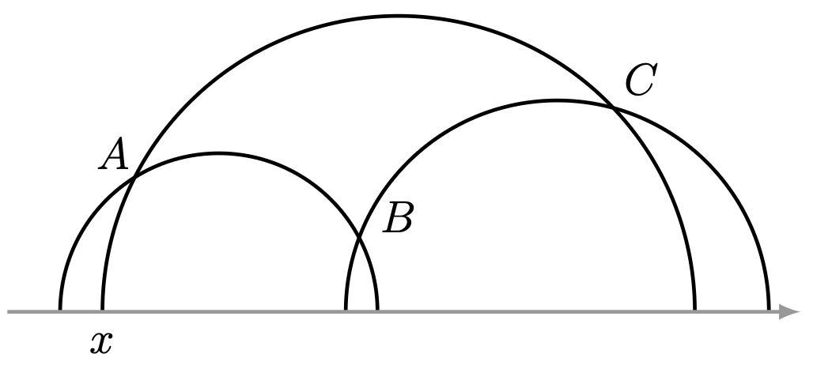
Hyperbolic triangle with vertices on $\mathbb{H}.$
From the drawing of the orthogonal circle we obtain the hyperbolic triangles
\(\triangle(x,B,C)\) and \(\triangle(x,A,B)\) that have in common the vertex \(x,\) which is on
the extended reals \(\hat{\mathbb{R}}.\)
Additionally, we have the following relation of hyperbolic areas
Since the vertex
\(x\) is on the extended reals \(\hat{\mathbb{R}},\) from Case
(1) it follows that (in this case, we will use the symbol \({\rm m}\) to denote the
measure of an angle \(\angle\))
The remaining cases are consequences of the previous cases:
Case (3) Two of its vertices are on the extended
reals.
Case (4) All three vertices are on the extended
reals.
The hyperbolic area of the hyperbolic triangle with vertices \(-1,\) \(1\) and \(\infty\) is \(\pi.\) Likewise the
hyperbolic area of the hyperbolic triangle with vertices \(-15,\) \(15\) and \(100\) is \(\pi.\)
We can extend the definition of hyperbolic triangle to hyperbolic
polygon and the Gauss-Bonnet Theorem to these objects.
Consider \(n\) different points \(z_1,\ldots,z_n\) on the hyperbolic plane together with the extended
reals \(\mathbb{H}\cup \hat{\mathbb{R}},\) such that \(z_{i},z_{i+1}, z_{i+2}\) are non-collinear for each
\(i\in\{1,\ldots, n-2\}.\) The hyperbolic polygon with \(n\) sides
\(P(z_{1},\ldots,z_{n})\) associated to the points \(z_1,\ldots,z_n\) in \(\mathbb{H}\cup
\hat{\mathbb{R}}\) is the interior of the following unions of the geodesics
\[
[z_1,z_2]\cup [z_2,z_3]\cup\ldots\cup [z_n,z_1],
\]
together with its respective boundary. The vertices of the hyperbolic
polygon \(P(z_{1},\ldots,z_{n})\) are the points \(z_{1},\ldots,z_{n}.\) The sides of the hyperbolic polygon \(P(z_{1},\ldots,z_{n})\) are the
geodesics
\[
[z_1,z_2],\ldots, [z_{n-1},z_n],[z_n,z_1],
\]
which without their endpoints are pairwise disjoint. The angles
\(\alpha_1,\ldots,\alpha_n\) of the hyperbolic polygon \(P(z_{1},\ldots,z_{n})\) are those that define its
sides at the vertices \(z_1,\ldots, z_n,\) respectively.
[Gauss-Bonnet for hyperbolic polygons] Given a hyperbolic polygon \(P(z_{1},\ldots,z_{n})\) of
\(n\in\mathbb{N}\) sides whose angles measure \(\theta_{1},\ldots,\theta_{n},\) then the hyperbolic area of
said hyperbolic polygon is given by the formula
\[
A_{h}(P(z_{1},\ldots,z_{n}))=(n-2)\pi-\left(\sum_{i_1}^{n}\theta_{i} \right).
\]
The vertex \(z_{i}\) defines the angle with measure \(\theta_{i},\) for \(i\in\{1,\ldots,n\}.\) Fix the
vertex \(z_{1}\) of the hyperbolic polygon \(P(z_{1},\ldots,z_{n})\) and draw the geodesics \([z_1,z_i]\)
with \(i\in\{3,\ldots,n-1\}\) and thus, we decompose the hyperbolic polygon \(P(z_{1},\ldots,z_{n})\) into \(n-2\)
hyperbolic triangles, which we denote by \(\triangle_{1},\ldots \triangle_{n-2}.\)
Each hyperbolic triangle \(\triangle_{i},\) with \(i\in\{1,\ldots,n-2\}\) has the following properties:
(1) Its vertices of the triangle are the points \(z_{1},z_{i+1},z_{i+2}.\)
(2) The measure of the angle that defines the vertex \(z_{1}\) (respectively, the vertices
\(z_{i+1}\) and \(z_{i+2}\) ) is \(\alpha_{i}\) (respectively, \(\beta_{i}\) and \(\zeta_{i}\)).
(3) From the Gauss-Bonnet Theorem for hyperbolic triangles we have that
\[
A_{h}(\triangle_{i})=\pi-(\alpha_{i}+\beta_{i}+\zeta_{i}).
\]
Observe that the hyperbolic area of the polygon \(P(z_{1},\ldots,z_{n})\) is the sum of the hyperbolic areas
of the \(n-2\) hyperbolic triangles
On the other hand, we have the following relations on the angles of the hyperbolic triangles constructed
previously
(1) All of them have in common the vertex \(z_{1},\) then
\[
\theta_{1}=\sum_{i=1}^{n-2}\alpha_{i}.
\]
(2) The hyperbolic triangles \(\triangle_{i}\) and \(\triangle_{i+1}\) have in common
the vertex \(z_{i+2},\) with \(i\in\{1,\ldots,n-2\}.\) Then
\[
\alpha_{i+2}=\zeta_{i}+\beta_{i+1}.
\]
(3) In the hyperbolic triangle \(\triangle_{1}\) (respectively,
\(\triangle_{n-2}\)) we have the relation \(\beta_{1}=\theta_{2}\) (respectively,
\(\zeta_{n-2}=\theta_{n}\)).
Substituting the previous relations into
equation (\ref{ec_gauss_bonnet_poligonos}) we obtain the expected
equality
On the Euclidean plane we call Euclidean rectangle a polygon of
four sides whose angles measure \(\dfrac{\pi}{2}.\) However, in the hyperbolic plane there are no objects of this type.
This fact is a consequence of the Gauss-Bonnet Theorem for hyperbolic polygons.
There are no hyperbolic polygons with four sides whose angles measure \(\dfrac{\pi}{2}.\)
Suppose that such a hyperbolic polygon \(P\) exists. From the Gauss-Bonnet Theorem it follows that the hyperbolic
area of said polygon is
\[
A_{h}(P)=(4-2)\pi-4\frac{\pi}{2}=0.
\]
This equality implies that the vertices of \(P\) are collinear.
Hyperbolic Trigonometry
Hyperbolic Trigonometry
The classical term angle of parallelism is used for the trigonometric
relations applied to the angles of a hyperbolic triangle \(\triangle\) with angles of measure
\(\alpha, 0, \dfrac{\pi}{2}.\) Using Möbius transformations in \({\rm PSL}(2,\mathbb{R}),\) we can
think that the vertices of the hyperbolic triangle \(\triangle\) are \(\infty, i\) and a complex number on the
unit circle (see Figure 11). Note that said hyperbolic triangle
\(\triangle\) has one side of finite hyperbolic length.
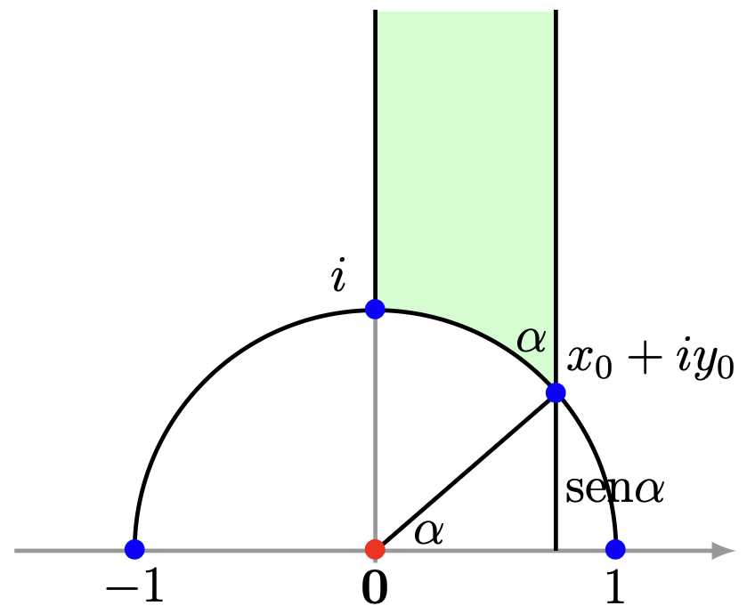
Angle of parallelism.
[Angle of parallelism] Consider the hyperbolic triangle \(\triangle\) with angles of measure
\(0,\dfrac{\pi}{2}, \alpha\neq 0.\) Denote by \(b\) the measure of the side of \(\triangle\) with endpoints
the vertices whose angles are \(\alpha\) and \(\dfrac{\pi}{2}.\) Then
(1) \(\senh (b) \tan (\alpha)=1.\)
(2) \(\cosh(b)\sen(\alpha)=1.\)
(3) \(\tanh(b)\sec(\alpha)=1.\)
We will begin by proving item (2). There exists an element \(T\)
of \({\rm PSL}(2,\mathbb{R})\) that sends the side of finite length of the triangle \(\triangle\) to the curve
\(x^2+y^2=1\) and the vertices of \(\triangle\) are sent to the set \(\{i, x_0+y_0i,\infty\}\) (see
Figure 11).
By construction we have the following trigonometric relation
\begin{equation}\label{eq:caso1_teo_paralelismo}
y_{0}={\rm sen} (\alpha).
\end{equation}
Since \(b=\rho(i,x_{0}+y_{0}i),\) then from Lemma 11 (Chapter 3) it follows that
Substituting equality (\eqref{eq:caso1_teo_paralelismo}) into the previous equality, we obtain the expected relation
\[
{\rm sen}(\alpha)\cosh(b)=1.
\]
Now, we will prove item (1). Recall the trigonometric identity
\begin{equation*}
\senh (b)=2\senh\left(\frac{b}{2}\right)\cosh\left(\frac{b}{2}\right).
\end{equation*}
Since \(b=\rho(i,x_{0}+y_{0}i),\) then the previous expression we rewrite it as
\begin{equation}
\senh(b)=2 \senh\left( \dfrac{1}{2}\rho(i,x_{0}+y_{0}i)\right) \cosh\left(
\dfrac{1}{2}\rho(i,x_{0}+y_{0}i)\right).
\end{equation}
From Lemma 11 it follows that the previous equality is equivalent to
The equality of item (3) follows from taking the quotient between
the equalities described in items (1) and (2).
As in Euclidean triangles, in hyperbolic triangles we also have the law of sines and the law of cosines. Recall
that given a Euclidean triangle with vertices \(A,\) \(B\) and \(C\) whose angles measure \(\alpha,\) \(\beta\) and
\(\zeta\) and, opposite sides with measures \(a,\) \(b\) and \(c\) respectively, then we have the
relations
(1) (Law of sines)
\(\dfrac{\sen(\alpha)}{a}=\dfrac{\sen(\beta)}{b}=\dfrac{\sen(\zeta)}{c}.\)
(2) (Law of cosines) \(a^{2}=b^{2}+c^{2}-2ab\cos(\alpha).\)
Consider the hyperbolic triangle \(\triangle(A,B,C)\) with vertices \(A,B\) and \(C\) whose angles measure
\(\alpha,\) \(\beta\) and \(\zeta\) (respectively) and, opposite sides with measures \(a,\) \(b\) and \(c\)
(respectively). Then we have the following relations
(1) (Law of sines)
\(\dfrac{\senh(a)}{\sen(\alpha)}=\dfrac{\senh(b)}{\sen(\beta)}=\dfrac{\senh(c)}{\sen(\gamma)}.\)
(2) (Law of cosines I) \(\cosh(c)=\cosh(a)\cosh(b)-\senh(a)\senh(b)\cos(\zeta).\)
(3) (Law of cosines II)
\(\cosh(c)=\dfrac{\cos(\alpha)\cos(\beta)+\cos(\zeta)}{\sen(\alpha)\sen(\beta)}.\)
The law of cosines II does not have an analogue in Euclidean geometry. In hyperbolic geometry this case
implies that if two hyperbolic triangles have the same angles, then there exists an isometry that sends
one to the other.
(Pythagoras) If \(\gamma=\frac{\pi}{2},\) then \(\cosh(c)=\cosh(a)\cosh(b).\)
We will use the Poincaré disk model \(\Delta\) to prove the Theorem.
Suppose that \(C=0\) and the
vertex \(A\) is on the positive real axis.
From Theorem 5 it follows that
From the identity \(\cosh(2x)=2\senh^2(x)+1\) equality (\ref{eq:relacion_hiperbolica_tcos_3}) is rewritten as
follows
\begin{equation}
\begin{split}
\cosh(c)&=2\senh^2\left(\frac{c}{2}\right)+1\\
&=2\frac{|A-B|^2}{(1-|A|^2)(1-|B|^2)}+1\\
\end{split}
\end{equation}
From this last expression it follows that
\begin{equation}\label{eq:relacion_hiperbolica_tcos_4}
|A-B|^2=\frac{(\cosh(c)-1)(1-|A|^2)(1-|B|^2)}{2}.
\end{equation}
In the Euclidean triangle with vertices \(A,\) \(B\) and \(C\) the law of cosines holds
Finally, we substitute relations (\ref{eq:relacion_hiperbolica_tcos_1}) and
(\ref{eq:relacion_hiperbolica_tcos_2}) into the previous equality and obtain
Law of sines. From the law of cosines I we have that
\begin{equation}
\cos(\gamma)=\frac{\cosh(a)\cosh(b)-\cosh(c)}{\senh(a)\senh(b)}.
\end{equation}
We square both sides of the equality and obtain
Calculate the hyperbolic area of the Euclidean circle with center at \(2i\) and radius \(1.\)
Calculate the hyperbolic area of the region \(\left\{z\in\mathbb{H}: |{\rm Re}(z)|\lt \frac{1}{2} \text{ and }
|z|>1\right\}.\) This region is known as the modular curve.
Prove Theorem 5. More precisely, verify that for
any two elements \(z,w\) on the Poincaré disk \(\Delta\) the following
equalities are satisfied:
Does the reflection with respect to the imaginary axis \({\rm R}_{\rm Im}\) preserve the hyperbolic area? If your
answer is affirmative, prove it.
Suppose that the hyperbolic triangle \(\triangle\) has one of its
vertices on the extended real axis \(\hat{\mathbb{R}},\) then its angle measures zero degrees.
Prove the Gauss-Bonnet theorem for a hyperbolic triangle \(\triangle(A,B,C)\) for the following
two cases:
Case (1) Two of its vertices are on the
extended reals.
Case (2) All three vertices are on the
extended reals.
Consider the hyperbolic triangle
$\triangle(A,B,C)$ with vertices $A,B$ and $C$
whose angles measure $\alpha$, $\beta$ and $\zeta$
(respectively) and, opposite sides with measures $a$,
$b$ and $c$ (respectively). Prove (Law of cosines II)
$$\cosh(c)=\dfrac{\cos(\alpha)\cos(\beta)+\cos(\zeta)}{\sen(\alpha)\sen(\beta)}.$$